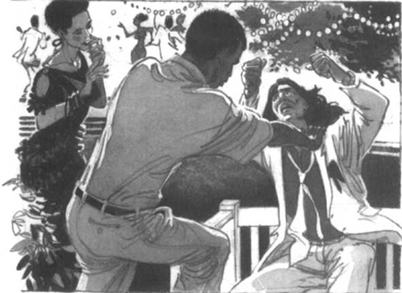

Listen to Part 1:
Một ngày nọ, White Star tổ chức một buổi tiệc lớn. Antonio đã đến từ Buenos Aires. Anh ấy đã chơi cho Brazil đấu với Argentina. Trong phút cuối của trận đấu, Antonio đã ghi bàn thắng quyết định. Anh ấy đã trở về như một người hùng.
Palito không muốn đến dự tiệc. Anh ghen tị với sự thành công của Antonio. Odete sẽ đến dự tiệc cùng Waldir. Cô ấy rủ Palito đi theo. Hai người cãi nhau, nhưng cuối cùng Palito cũng đồng ý đi.
Trong buổi tiệc, Odete quan sát Palito cẩn thận. Sau một hồi, cô thấy anh uống quá nhiều rượu. Odete rủ anh đi dạo trong vườn. Palito đồng ý, nhưng rất miễn cưỡng.
Cô nói với anh: "Anh lại uống quá nhiều rượu rồi".
Palito đáp: "Đó là việc của tôi".
Odete trả lời: "Và đó cũng là việc của chúng em. Của cả Chico nữa. Chúng em đều muốn anh lại được chơi ở đội một. Còn bố thì muốn thấy anh chơi cho Brazil một ngày nào đó, giống như Antonio vậy".
Palito hét lên: "Cô hãy lo việc của cô đi".
Một giọng nói cất lên: "Này Palito". "Cậu hét hò cái gì thế?".
Đó là Waldir. Anh đến tìm Odete. Anh muốn khiêu vũ với cô.
Palito hét lên: "Cũng không phải là việc của anh". "Tất cả các người đều có thể xuống địa ngục hết đi".
Listen to Part 2:
Waldir bắt đầu nói: "Nghe này, ..."
Palito giơ nắm đấm và quay lại về phía Waldir với vẻ giận dữ. Nhưng Waldir đã túm lấy vai Palito bằng đôi bàn tay rắn chắc của anh. Anh ấy bắt Palito ngồi xuống một chiếc ghế gỗ. Khi Palito đã ngồi yên, Waldir nói với anh.

Waldir nói: "Cậu đang thương hại cho bản thân mình". "Nhưng cậu không có lý do gì để khổ sở như vậy. Chân của cậu đã lành. Chúng ngay thẳng và khỏe mạnh kia mà. Có đúng không?"
Mọi người im lặng rất lâu.
Palito chậm rãi nói: "Đúng vậy". "Nhưng tôi không thể sử dụng đôi chân của mình nữa. Tôi ước mình có đôi chân cũ, chân bị khập khiễng của mình trở lại".
Waldir đáp: "Bây giờ cậu có một đôi chân mới". "Cậu cần thêm thời gian để làm quen".
Palito nói: "Tôi có thể làm gì chứ?". "Tôi đã thử mọi cách rồi. Mà không được".
Waldir trả lời: "Cậu chưa cố gắng hết sức". "Hãy làm việc và tập luyện chăm chỉ hơn. Cậu vẫn có thể trở thành một cầu thủ bóng đá vĩ đại".
Odete nói thêm: "Và bố vẫn muốn thấy cậu chơi cho Brazil một ngày nào đó". "Tại sao cậu không cố gắng hơn nhỉ? Hãy cho ông ấy thấy rằng cậu có thể làm được".
Listen to Part 3:
Odete và Waldir chờ đợi câu trả lời của Palito.
Cuối cùng anh nói: "Được". "Tôi sẽ thử một lần nữa và lần này tôi sẽ cố gắng hơn".
Odete và Waldir không quay trở lại dự tiệc. Họ về nhà cùng Palito và Palito đi thẳng lên giường đi ngủ.
Sáng hôm sau, Palito đã ra sân tập lúc bảy giờ. Anh không bao giờ đi muộn giờ tập luyện nữa.